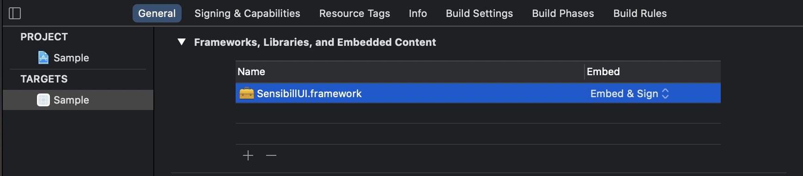
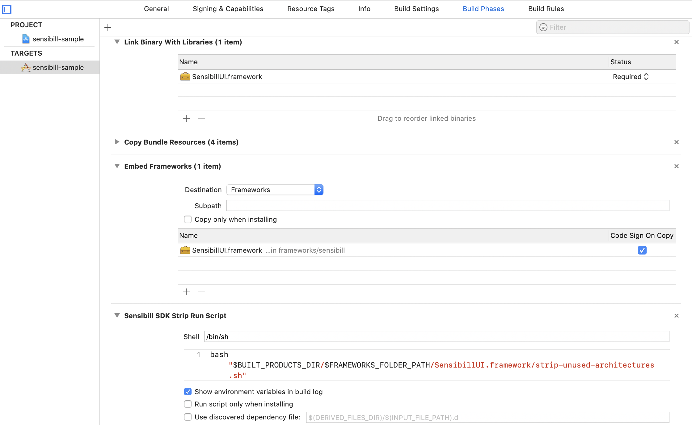

Installation Reference
Installation Reference
Installation
Overview
The Sensibill SDK is available in a private repository on bitbucket. Please contact Sensibill to obtain access to the repository.
Once access is obtained, you can either use the SDK in your project via CocoaPods or by downloading and importing the .framework file into your project.
Additionally, Download sensibill public certificates named Certificates.zip that can be found here, which are required to use certificate pinning. See Setup for more information.
Via CocoaPods
CocoaPods provides a quick way to download external dependencies for an iOS project. The Sensibill SDK can be downloaded and accessed via CocoaPods:
If your project isn’t using CocoaPods already, follow the set up guide from the official CocoaPods website here
Once your project is set up with CocoaPods, add the Sensibill dependency to your project’s Podfile in the following format:
pod 'Sensibill', :git => 'ssh://git@bitbucket.org/sensibill/sensibill-ios-sdk-release.git', :tag => 'vX.Y.Z', wherevX.Y.Zrepresents to version of the SDK you want to use.Note: the link above provides an SDK for the latest supported version of Xcode. To obtain the SDK for earlier versions of Xcode, use the tag format
:tag => 'vX.Y.Z-xcode-11.N', whereNis the minor Xcode version.In your terminal, navigate to the root directory of your application’s project folder.
Run
pod installto integrate Sensibill SDK to your project.
Direct Download
To download the Sensibill SDK directly, contact our Delivery/Support team to get access to the portal to download the SensibillUI.framework file.
Step 1: After you have downloaded the zip, drag SensibillUI.framework from the zip to your Application Target’s Frameworks, Libraries, and Embedded Content section under the General tab as seen in the below screenshot
- Ensure that the framework is set to
Embed & Sign - Ensure that
SensibillUI.frameworkis included in theEmbedded BinariesandLinked Frameworks and Librariessection under theBuild Phasestab.

Step 2: Create a new Run Script Phase in your target’s Build Phases, underneath the Embed Frameworks phase. Input the following command in the text field of the new phase:

bash "$BUILT_PRODUCTS_DIR/$FRAMEWORKS_FOLDER_PATH/SensibillUI.framework/strip-unused-architectures.sh"
Step 3: On Xcode 12.3, update the Validate Workspace setting to Yes to avoid the following compilation error:
Building for the iOS Simulator, but the linked and embedded framework 'SensibillUI.framework' was built for iOS + iOS Simulator.
or
Building for iOS, but the linked and embedded framework 'SensibillUI.framework' was built for iOS + iOS Simulator.
Using SensibillUI module in Swift
import SensibillUI
Note: You may see No such module ‘SensibillUI’ or Could not load underlying module SensibillUI compilation error next to the above statement (SDK 1.25 and up). Perform the following steps to resolve the compilation error:
- Locate the
SensibillUIframework on disk, and notice its path relative to the project’s root folder. For Example:
$(SRCROOT)/<relative_path_to>/SensibillUI.framework
- Select the Build Settings tab of the Target that contains the
SensibillUIframework. - Scroll to the Swift Compiler - Search Paths section. (Tip: Search Import Paths to quickly jump to this section.)
- Add the
SensibillUI.frameworkpath you located in the first step to Import Paths settings, followed by the directory SupportModules, and set the search mechanism to recursive so that the swift compiler can find one or more module maps. For Example:
$(SRCROOT)/<relative_path_to>/SensibillUI.framework/SupportModules
Example:
If the SensibillUI framework can be located in the following folder structure:
- host-app-source-root > frameworks > sensibill > SensibillUI.framework
You would add the following path to the Import Paths setting:

The above change will be shown as follows in the project file:
SWIFT_INCLUDE_PATHS = "$(SRCROOT)/frameworks/sensibill/SensibillUI.framework/SupportModules/**";
Using SensibillUI module in Objective-C.
When the SensibillUI framework is used in an Objective-C Project, the ‘SensibillUI’ framework can be imported by adding the following statement:
@import SensibillUI;